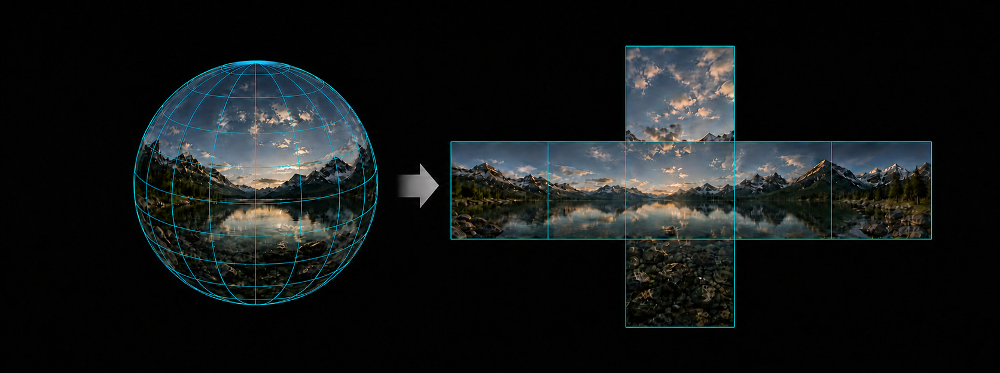
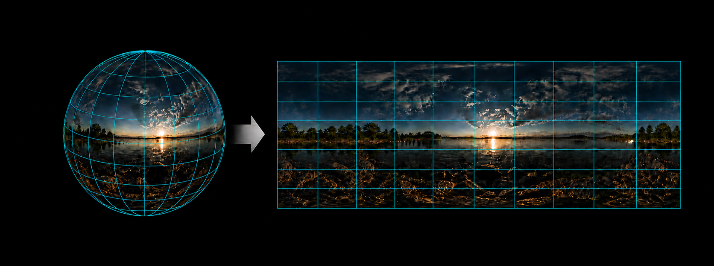
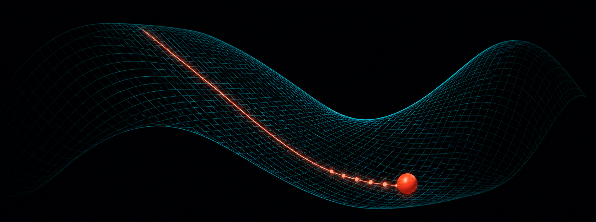
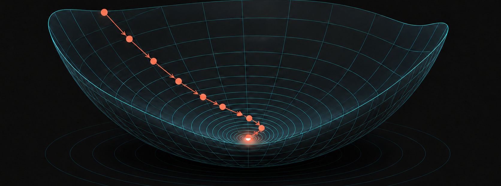
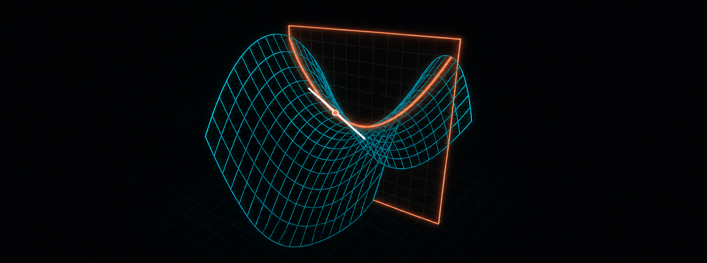
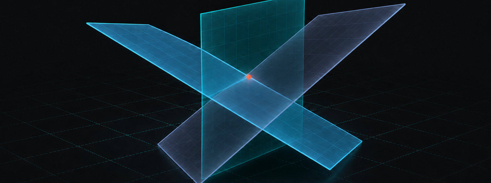
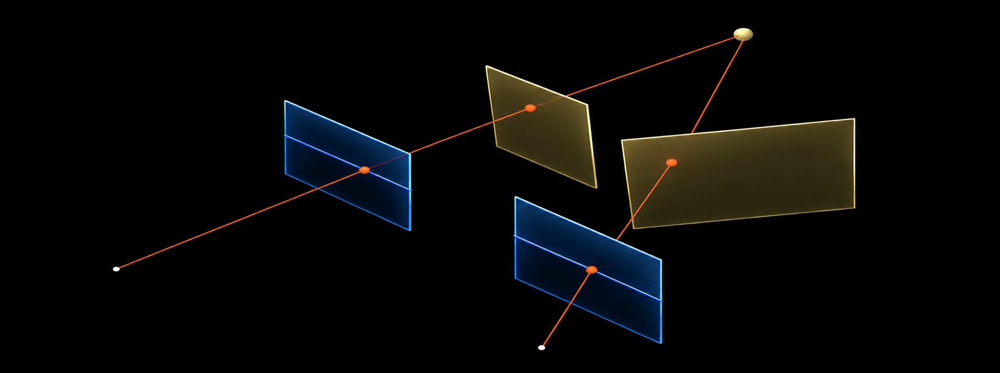
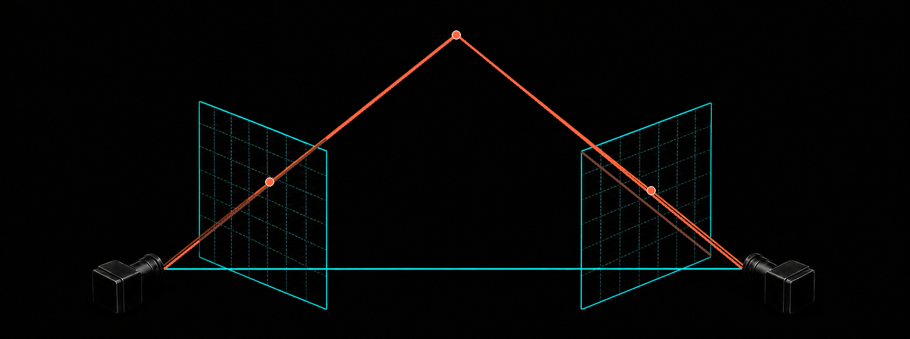
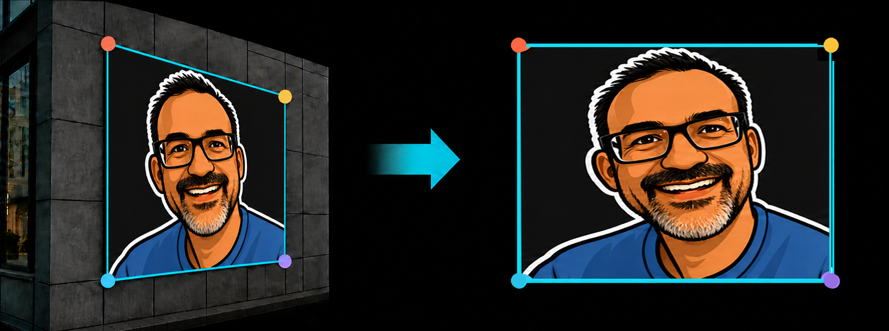
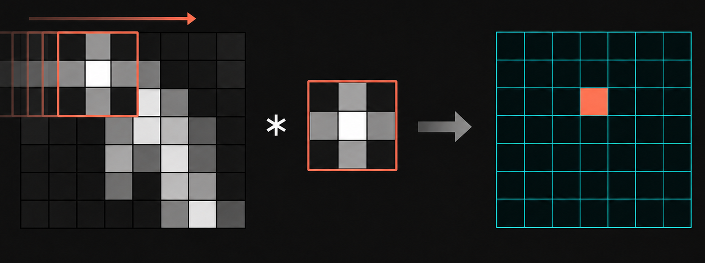

#KostasVisualizations
The collection
See it. Move it. Understand it.
Interactive visual explanations for the geometry and mathematics behind modern computer vision. Each experience turns an abstract construction into something you can inspect, manipulate, and understand.

Projective Geometry
Sphere to Cubemap
Six views. One environment.

Projective Geometry
Sphere to Equirectangular Projection
Same world. Different coordinates.

Optimization
Stuck in a Bad Local Minimum?
Why local minima are rarely the problem.

Optimization
The Goldilocks Principle of Learning Rates
One number. Three very different outcomes.

Optimization
Gradient Descent
Tighten up your learning rate. We’re going down.

Calculus
Partial Derivatives
Hold one variable constant. Follow the curve. Read the slope.

Linear Algebra
Linear Systems as Geometry
Where constraints meet, solutions appear.

Projective Geometry
Stereo Rectification
From arbitrary cameras to parallel views.

Projective Geometry
Parallel Stereo
Two views. One point. One matching scanline.

Projective Geometry
Epipolar Geometry
The geometry behind stereo vision.

Projective Geometry
Planar Homography
Plane-to-plane projective mapping.

Projective Geometry
Perspective Projection
One point. One ray. One image.

Signal Processing
Correlation (aka "Convolution")
Slide. Pointwise multiply. Sum. Repeat.

Linear Algebra
2D Transformations
Geometry in motion.